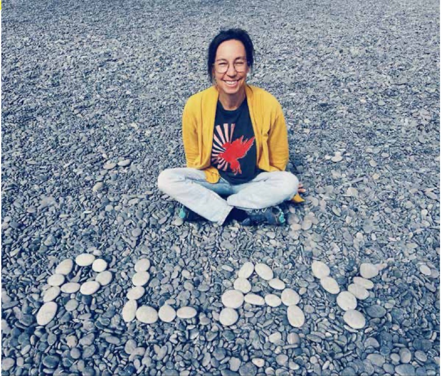
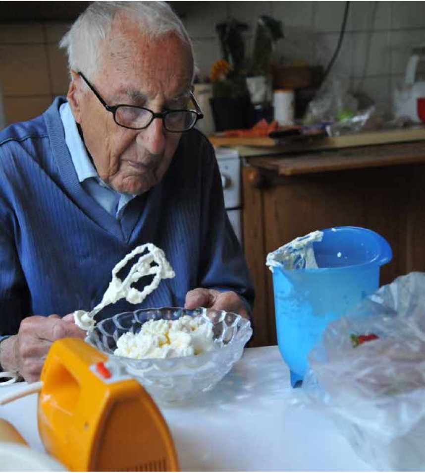

Intervju med Lisa Carlgren
När design blir ett sätt att lära
Lisa Carlgren är forskare inom design, transformation och innovation på RISE. Hon har en bakgrund som docent vid Chalmers tekniska högskola och har i mer än ett decennium studerat hur organisationer kan använda designmetodik för att driva innovation, lärande och förändring. Lisas arbete kretsar kring hur vi kan skapa strukturer som stödjer kreativitet, reflektion och samskapande – i praktiken lika mycket som i teorin. Hon är en ofta anlitad expert inom tjänstedesign
och innovationsledning, och drivs av frågan hur organisationer kan bli mer lärande och experimenterande i vardagen.

När Lisa Carlgren berättar vad hon arbetar med blir svaret sällan kort. Design, innovation, lärande, forskning – allt hänger ihop. För henne är design inte främst ett sätt att forma produkter, utan ett sätt att förstå världen och skapa mening i komplexa sammanhang.
“Design handlar för mig om att utforska genom att göra, att testa sig fram för att förstå vad som egentligen är problemet.”
Lisa är senior forskare på RISE, men undervisade i många år på Chalmers tekniska högskola, där hon också disputerade 2013 med en avhandling om design thinking och innovationsförmåga i organisationer. Hon beskriver hur vägen dit aldrig var spikrak, den tog en vindlande riktning från materialteknik till språk, från ingenjörsrollen till designforskare. Hennes process har varit att följa slumpen ganska mycket, men i efterhand kan hon se att det alltid har handlat om nyfikenhet och om att förstå hur människor samarbetar och lär.
Från produkter till processer
När Lisa började forska om design mötte hon främst den traditionella bilden, produkter som skulle formges. Men det förändrades snabbt.
“När vi började studera organisationer såg vi att design inte längre bara handlade om saker, utan om arbetssätt,” säger hon. “Design thinking blev ett sätt att utveckla strategier, kultur och sättet människor samarbetar på.”
Hon och forskarkollegorna på Chalmers intervjuade och följde företag som försökte införa design thinking i sina organisationer. Resultatet blev en mer nyanserad förståelse.
Det var inte processkartorna eller de post-it-klädda väggarna som gjorde skillnad, utan alla underliggande principer.
Hon nämner dessa: ett tydligt fokus på människor och deras behov, att kritiskt utforska och omformulera problem, att experimentera och lära genom att göra, att använda det visuella och prototypande som språk, och slutligen mångfald – i både perspektiv, erfarenheter och kompetenser (Carlgren, Elmquist & Rauth, 2016). De organisationer som lyckades bäst använde design thinking inte som en metod, utan som ett sätt att tänka.
Lekfullhet som strategi
Alla kan vi nog känna igen en viss trötthet av att delta i ännu en workshop med postit-lappar och färgpennor, eller ännu mer välutrustat med grejer som piprensare, pärlor, glitter, träbitar och allt möjligt annat designmaterial. I en värld som värderar effektivitet kan pyssel och lek verka oseriöst. Lisa skrattar lite åt det ordet – pyssel.
“Min son frågade en gång om det är det här skattepengarna går till, pyssel,” berättar hon. “Men det finns en allvarlig kärna i lekfullheten. Den skapar trygghet. Man vågar vara nybörjare.”
När hon beskriver sitt arbete på RISE:s avdelning Prototypande samhälle handlar det just om detta. Att våga och kunna möta komplexitet genom att gestalta, pröva, och reflektera. Att skapa en fysisk artefakt, om än bara en enkel modell, hjälper människor att prata om det abstrakta. Det är lättare att prata om det man ser, och ofta uppstår förståelsen först när man börjar göra. Och det är relativt lätt att ta sig an det görandet med lite pysselmaterial.
Att undervisa genom att leva som man lär
Under sina år som lärare på Chalmers utvecklade Lisa ett synsätt där lärande i sig designas. Hon kallade det inte lärandedesign – men det var precis vad det var.
“Jag ville inte bara prata om design thinking, utan leva det,” säger hon. “Att undervisa på det sättet betyder att man själv måste våga iterera, förändra och visa sig sårbar.”
Hon designade sina kurser som upplevelser där studenter fick arbeta med verkliga problem i tvärdisciplinära team. Bedömningen handlade inte om den perfekta lösningen, utan om hur studenterna lärde sig längs vägen. Det fanns en jury som bedömde själva processen, och studenterna skrev reflektioner under hela kursen. De lärde sig att utforska, att tåla ovisshet, och att förstå vad samarbete faktiskt kräver. De mest ambitiösa och målmedvetna studenterna kunde till en början bli stressade av det här arbetssättet.
“De var vana vid att direkt försöka leverera rätt svar,” säger Lisa. “Men design kräver att man stannar i frågan lite längre.”
Här är psykologisk trygghet extra viktigt. Trygghet måste råda när det man jobbar med är komplext, och arbetssätten man lär sig totalt utmanar hur man hittills har gjort och lärt, kanske till och med allt man tror på eller till och med är. I detta är man extremt sårbar, och leken är nyckeln till att våga. Då kan inte tryggheten svaja.
Design som lärandemotor
Kopplingen mellan design och lärande blir tydlig när Lisa beskriver principerna. Design thinking bygger in experimentellt lärande, görandet är själva sättet att förstå. Men det kräver att man ser lärande som mer än utbildning.
“För mig handlar lärande om att skapa upplevelser där människor utvecklas,” säger hon.
När hon pratar om lärande organisationer blir hon mer försiktig. Hon tror inte att alla organisationer kan bli lärande i formell mening, men kanske delar av dem. Hon tror mer på öar av lärande som kan växa, med individer och team som reflekterar, testar nytt och delar erfarenheter. Hon som flera andra i vårt arbete betonar här vikten av reflektion, vilket ofta är det första som försvinner i tidspressade organisationer.
“Reflektion är inte lyx,” säger hon. “Det är själva kärnan i lärande.”
Design i motvind
Lisa vet att designmetodik ibland väcker motstånd. Folk kan verkligen bli stressade när de inte vet svaret från början, och Lisa är van vid att de tycker att det visuella verkar flummigt. Hon berättar om en workshop med försvarssektorn där hon märkte hur svårt det var att prata om kreativitet. Men även där fanns en poäng att göra det, menar hon. Det handlar om att hitta rätt språk. Att översätta design till deras värld utan att tappa det som gör den kraftfull. Hon ser det som ett dansande mellan världar, som hon själv praktiserar dagligen.
“Jag är ingenjör i grunden, jag kan prata båda språken,” säger hon. “Det hjälper att hitta berättelser som landar. Och så småningom börjar folk se värdet i att utforska på andra sätt.”
När folk använder design thinking, finns kraften i att inse att något inte är som man tror, att man tvingas ändra riktning och utforska något helt annat. Att man får stöd att se saker ur andra perspektiv än sitt eget. Det här är något som Lisa och hennes kollegor mycket medvetet designar för och även pushar studenter och deltagare igenom. För att sen få dem att reflektera över just dessa aha-upplevelser / pivots de då fått och gjort.
Det här är ofta det som också stannar kvar hos studenterna senare och som de i efterhand nämner som något de tagit med sig. Att inse att det man trodde var ett problem faktiskt inte var det, samt att man måste förstå andra och kliva utanför sina egna perspektiv för att hitta de verkliga frågorna och problemen.
Att göra lärandet synligt
En röd tråd i allt Lisa gör är alltså visualiseringen. I hennes tidigare kurser på Chalmers fick studenter skapa journey maps över sin egen lärprocess. I organisationer använder hon enkla skisser eller modeller för att synliggöra vad som annars bara sägs. När något blir synligt kan det bli gemensamt, och det är ofta där lärandet tar fart. Hon önskar att fler såg design som ett hantverk för lärande, snarare än som en trend. Det finns nämligen så mycket kraft i att faktiskt ta sig tid att skapa något som passar just de människor man har framför sig. Det kräver tid och eftertanke – men ger något som lever längre.

Att fortsätta lära, för alltid
Lisa talar ofta om nyfikenhet, inte som begrepp utan som livsstil. En hon gärna praktiserar själv, just nu lär hon sig själv koreanska – och K-pop-dans.
“Jag försöker släppa effektiviteten,” säger hon. “Jag låter det skölja över mig, utan att jaga resultat. Det är ett nytt sätt att lära för mig.”
Hon berättar också om sin farfar som började läsa spanska vid 94 års ålder. Han är för henne en stark förebild, och hon hoppas att hon också sitter där en dag, och lär sig nya saker hela livet.
Nyligen såg Lisa på en loppis en pärlplatta i naturlig storlek, föreställande en känd skådespelare (David Hasselhoff). Det får henne att fnissa när hon föreställer sig själv som en enorm pärlplatta på en lärandemässa.
“Vi kanske borde ställa ut även våra experter som pärlplattor,” säger hon och skrattar. “Det vore rätt talande, för det är lite det det handlar om. Att våga se lärande som något lekfullt och mänskligt, inte bara som prestation.”
Playguide – att designa för lärande
Börja i människan
Prata med dem som ska lära, fråga dem: Vad är svårt, vad känns meningsfullt, vad saknas? Samtidigt vet inte alltid människor själva vad de behöver, så en mild provocering kan behövas, men med djup förståelse för människorna i sammanhanget.
Omformulera problemet
Låt deltagare utforska och skriva om frågorna tills de känns nya. Det är ofta där lärandet börjar.
Experimentera smått
Gör en snabb prototyp av en aktivitet, testa den och samla feedback.
Visualisera processer och aktiviteter
Låt det som händer bli synligt och kännas - skapa en enkel skiss, karta, foto eller en prototyp (byggd miljö) att röra sig i.
Gör reflektionen till en vana
Två minuter på slutet: Vad lärde vi oss? Vad gör vi annorlunda nästa gång?
Håll lekfullheten levande
Låt humor, nyfikenhet och generositet finnas med. Det skapar trygghet och mod. Gör, lär, ändra. Smått och ofta. Det är så lärandet kan ske.